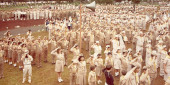
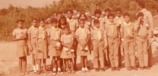

Assim ocorreu em 1955, quando o primeiro Clube Sul-Americano teve início na cidade de Lima, Peru, sob a liderança do casal Nercida e Armando Ruiz. Já no segundo ano de atividades, o Clube peruano levou dez Desbravadores ao batismo, através da classe bíblica. Era o início de uma parceria evangelística entre os Desbravadores e as classes batismais que faria dos Clubes uma das mais poderosas ferramentas de evangelização da igreja. No final da década de 50, o Pastor Jairo Tavares de Araújo, Líder da juventude adventista da Divisão Sul-Americana, com sede ainda no Uruguai, preparou um pequeno manual sobre como organizar um Clube de Desbravadores para incentivar a formação de novos Clubes.

No final da década de 50, o Pr. Jairo T. Araújo, Líder da juventude Adventista da Divisão Sul-Americana, com sede ainda no Uruguai, preparou um pequeno manual sobre como organizar um Clube de Desbravadores, e isso provocou o desenvolvimento paralelo de Clubes de Desbravadores em lugares do Brasil como Santa Catarina, São Paulo, Rio de Janeiro e Rio Grande do Sul.
Em Santa Catarina e São Paulo, nasceram em 1959 os primeiros Clubes de Desbravadores do Brasil.

Em 1958, o Pr. Henry R. Feyrabend veio como missionário do Canadá para Santa Catarina. Trabalhou como Departamental de Jovens utilizando material em inglês que havia trazido de seu país e começou a visitar as igrejas de Santa Catarina falando sobre a importância do Clube de Desbravadores. Do ínicio de 1959 até 1960 ele fundou 7 Clubes, sendo o primeiro o Clube Vigilantes, de Lajeado Baixo, e o primeiro Diretor foi Haroldo Fuckner. Alguns anos mais tarde, foi a primeira vez que a Revista Adventista, em dezembro de 1975, noticiou um Campori. Os mais de 300 Desbravadores estiveram sob a liderança dos Prs. José Maria Barbosa e Jason MacCraken.
Em Ribeirão Preto, os membros que comporiam a diretoria do Clube foram escolhidos, e a primeira reunião oficial aconteceu num domingo pela manhã, no pátio da antiga igreja central,
quando foram inscritos 23 juvenis no Clube que foi chamado de Pioneiros e cujo primeiro Diretor foi Luiz Roberto Freitas. Em 1961 o Pr. Wilson Sarli, Departamental MV de São Paulo, trouxe para Ribeirão Preto o lenço, as insígnias, o voto e a lei dos Desbravadores, oficializando o Clube.